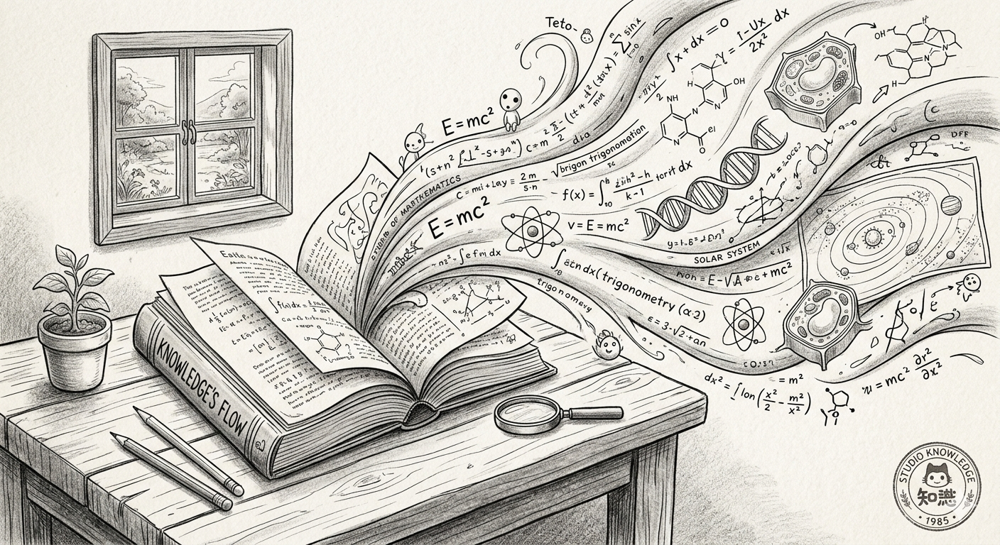

Digital Identity

Open Access
Making your publications openly available is both an ethical and legal imperative and a practical visibility strategy. Open papers get more reads, which could translate into more citations, and definitively more visibility.
Many colors, two main routes
Green OA | self-archiving a version of your paper in a repository:
Deposit a preprint (before peer review) or postprint (accepted manuscript, before publisher formatting) in a repository. With few exception, never the published version. Lets see the difference between versions with this paper.
Free, always permitted in some form, doesn’t depend on journal policy
Gold OA | publishing in an open access journal or paying an APC:
The paper is freely available from day one at the journal’s site
Not necessarily means paying to publish. Journals from institutions (e.g., all university and CSIC journals) are free to publish and open. They are subsidised.
But, does for which you do have to pay can be very expensive (APCs); check if your institution or funder has agreements (Plan S, transformative agreements)
Check journal policies at Sherpa/Romeo
Check before you submit. Sherpa/Romeo tells you what version you can self-archive and under what embargo. Most journals allow green OA of the accepted manuscript after 6–12 months. Many allow it immediately.
What to deposit and where
| Output type | Where to deposit | Example |
|---|---|---|
| Preprint / postprint | Zenodo, SocArXiv, arXiv (discipline-specific) | Preprint - Postprint |
| Dataset | Zenodo, OSF, institutional repository | Dataset |
| Code / software | GitHub + Zenodo (for DOI and citability) | Code |
| Teaching materials | Zenodo, institutional repository | Curso de bibliometría |
Project management and reproducibility
Open Science Framework (OSF) is useful for managing project files, pre-registrations, and sharing materials across collaborators. It integrates with GitHub, Zenodo, and Google Drive.
Every deposited item gets a DOI from Zenodo. This makes datasets, code, and teaching materials formally citable — they can appear in your CV and your ORCID profile.
Website structure and contents 🟡
An academic website gives you control over your digital identity. It is the one place where you decide what appears, in what order, and with what framing.
Do you need one?
🔴 If you are applying for positions or grants: yes.
🟡 If you have a permanent position: strongly recommended but not urgent.
🟢 If you are a PhD student with no publications yet: start simple, update as you go.
“You cannot have a digital reputation if you lack a real reputation. First publish, then make a name.”
What platform to use
Use whatever you are comfortable maintaining. Abandoned websites are worse than no website.
- Quarto — if you already use R or Python, this is the smoothest option. Version-controlled, free hosting via GitHub Pages. (These materials are built with Quarto.) - Example: my website
- WordPress — flexible, no coding required, some maintenance overhead. Our unit’s website
- Google Sites — simplest option, functional but limited customisation. Dani’s website
Recommended structure
Mirror your CV, but with context:
- About / Bio — 2–3 paragraphs. Who you are, what you work on, where you are based.
- Research — current projects, interests, links to papers (link to repositories, not PDFs hosted on your site)
- Publications — link to ORCID or a repository; don’t upload PDFs directly unless you have verified you can
- Teaching — courses, materials (link to open repositories)
- CV — a downloadable PDF, kept current
Do not host PDFs of your papers directly on your website unless you have verified the publisher permits it. Link to the open repository version (Zenodo, SocArXiv) or to the publisher page with a note that a postprint is available on request.
Keep it simple and maintainable
- One page per section is enough
- Update it once or twice a year at minimum
- A clean, navigable site with outdated content is better than an elaborate site you never touch
Social media and outreach 🟢
Social media for researchers is not about vanity metrics. Used intentionally, it is a tool for finding collaborators, reaching non-specialist audiences, and staying current in your field.
Is it worth it?
Honest answer: it depends, and it is always optional. The research on whether social media activity translates to citations is mixed. What it does demonstrably do:
Where to be (in 2025)
LinkedIn — the most broadly used professional network. Useful for reaching beyond academia: industry, policy, journalism. If you maintain only one social profile, make it this one.
Bluesky — the platform that has absorbed much of the academic Twitter/X community. Active communities in social sciences, open science, and bibliometrics. Good for real-time engagement with peers.
Platforms not recommended: ResearchGate is useful for discoverability but not for engagement. Academia.edu has a paywalled model that conflicts with open access principles.
A minimal, sustainable approach
You don’t need to be active everywhere. A realistic low-effort strategy:
Sharing a paper informally — even just posting it with a sentence about why it matters — can generate invitations to present, new collaborations, and media coverage. The barrier is lower than it seems.
What not to do
Early career researchers may benefit most from LinkedIn for job visibility. Senior researchers may find public outreach more strategic for transfer and impact narratives (relevant for ANECA CU applications and sexenios de transferencia).